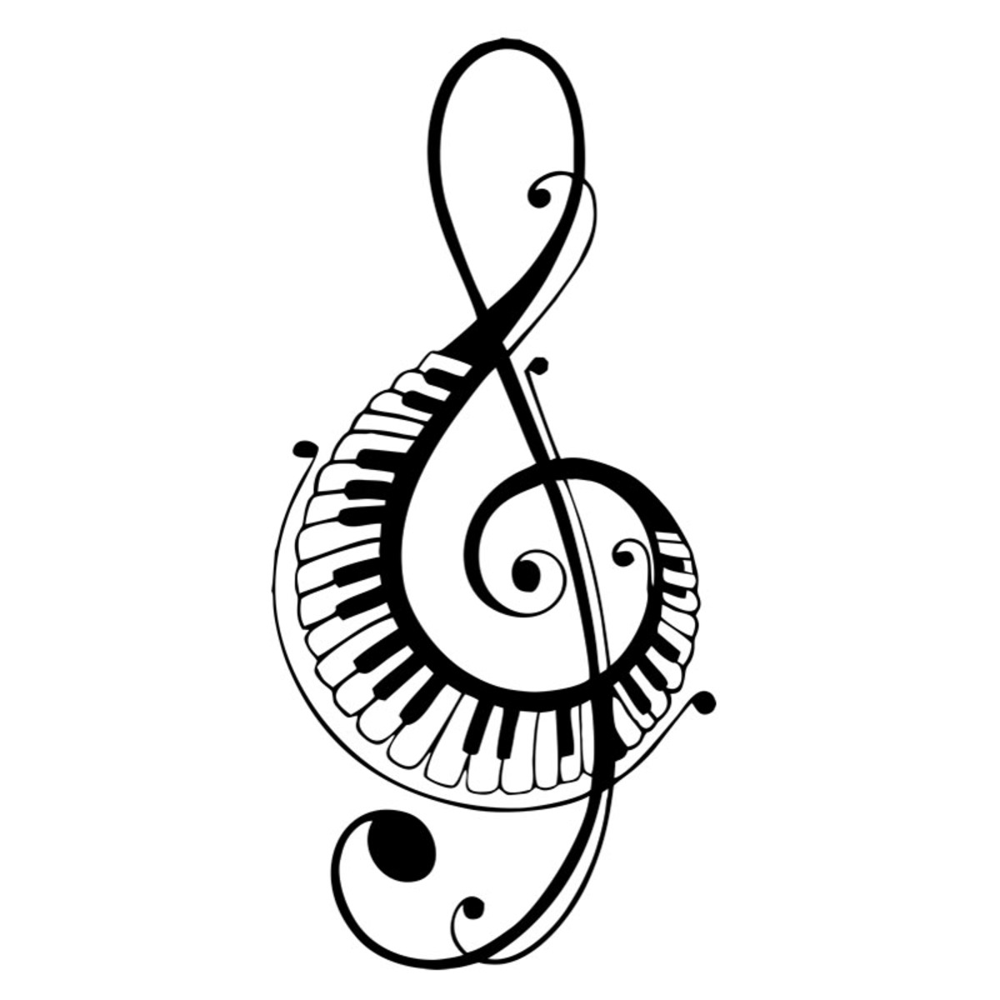

A nossa vida é conduzida pelo ritmo que nos conduz!

Figura 1. Clave de sol
O que vamos ver hoje?
Nosso conteúdo hoje vai ser sobre a música e como ela faz a diferença na nossa vida!
O que é música?
A música é a arte de manisfestar os diversos afetos
da nossa alma mediante ao som.
Por que devemos nos apropriar da música em nossas vidas?
A música é um elemneto que vem desde a pré-história e vem se estabelecndo em nossas
até os dias atuais, ou seja ele sempre esteve presente em nossas vidas e continua
melhorando cada vez mais, por isso manter uma vida repleta de música ajuda a sermos masi felizes.